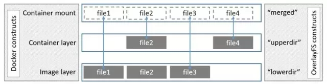

存储驱动
当前Docker容器支持的存储驱动包括：AUFS、DeviceMapper、OverlayFS、Btrfs、ZFS
Copy On Write技术
Docker镜像含有启动Docker容器所需的文件系统结构及其内容。在传统的Linux操作系统内核启动时，首先挂载一个只读的rootfs，当系统检测其完整性后，再将其切换为读写模式。而在Docker架构中，当Docker daemon为Docker容器挂载rootfs时，沿用了Linux内核启动时的方法，即将rootfs设为只读模式，在挂载完毕之后，在已有的只读rootfs上再挂载一个读写层。这样，可读写层处于Docker容器文件系统的最顶层，其下可能挂载多个只读层，只有在Docker容器运行过程中文件系统发生变化时，才会把文件拷贝到读写层再修改，这样的技术被称为写时复制（Copy On Write）。
存储驱动提供了接口支持镜像分层与写时复制机制。
OverlayFS

OverlayFS是一个联合文件系统，与AUFS的做法有些类似，由于合并目录，不同于AUFS镜像层越多则查找时间越长，OverlayFS在查找效率方面作了不小的改进。基于OverlayFS技术有两种存储驱动：overlay与overlay2，根据官方文档，overlay要求内核版本3.18以上，overlay2要求内核版本4.0以上。
参考
http://www.uml.org.cn/yunjisuan/201610122.asp?utm_source=tuicool&utm_medium=referral